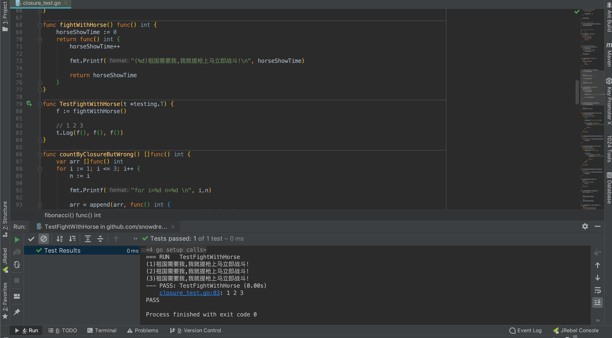
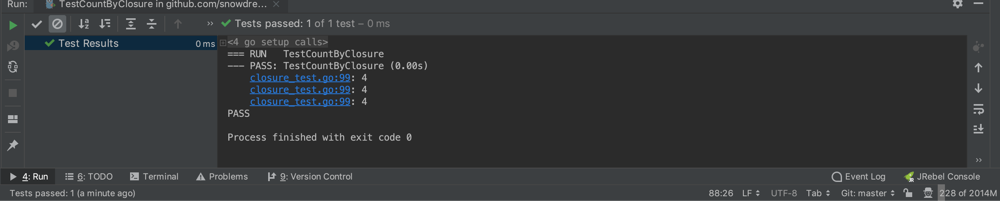
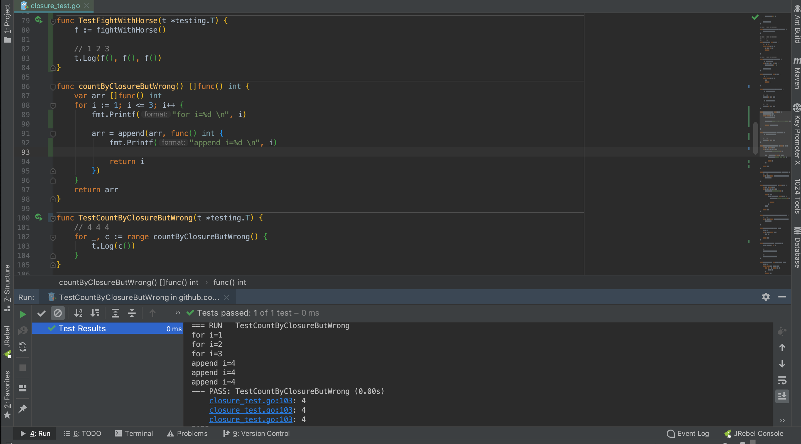
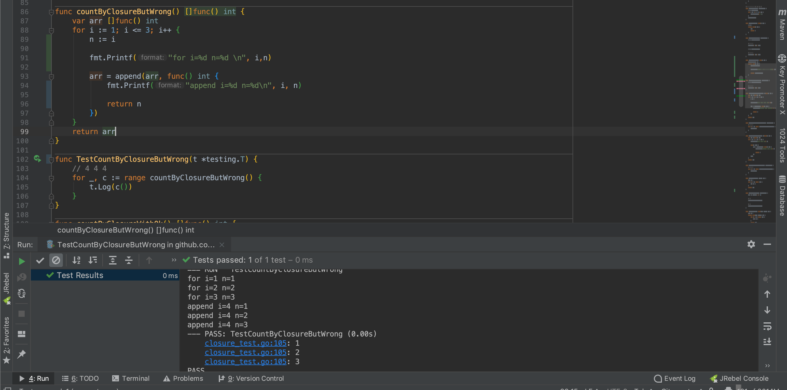

1. 简要理解闭包
闭包是主流编程语言中的一种通用技术,常常和函数式编程进行强强联合,本文主要是介绍 Go 语言中什么是闭包以及怎么理解闭包.
如果读者对于 Go 语言的闭包还不是特别清楚的话,可以参考上一篇文章 go 学习笔记之仅仅需要一个示例就能讲清楚什么闭包.
或者也可以直接无视,因为接下来会回顾一下前情概要,现在你准备好了吗? Go !

1.1. 斐波那契数列见闭包
不论是 Go 官网还是网上其他讲解闭包的相关教程,总能看到斐波那契数列的身影,足以说明该示例的经典!
斐波那契数列(
Fibonacci sequence),又称黄金分割数列 .因数学家列昂纳多·斐波那契(Leonardoda Fibonacci)以兔子繁殖为例子而引入,故又称为“兔子数列”,指的是这样一个数列:1、1、2、3、5、8、13、21、34、……在数学上,斐波那契数列以如下被以递推的方法定义:F(1)=1，F(2)=1, F(n)=F(n-1)+F(n-2)（n>=3，n∈N*）.在现代物理、准晶体结构、化学等领域，斐波纳契数列都有直接的应用,为此,美国数学会从1963年起出版了以《斐波纳契数列季刊》为名的一份数学杂志,用于专门刊载这方面的研究成果.

根据上述百度百科的有关描述,我们知道斐波那契数列就是形如 1 1 2 3 5 8 13 21 34 55 的递增数列,从第三项开始起,当前项是前两项之和.
为了计算方便,定义两个变量 a,b 表示前两项,初始值分别设置成 0,1 ,示例:
// 0 1 1 2 3 5 8 13 21 34 55
// a b
// a b
a, b := 0, 1
初始化后下一轮移动,a, b = b, a+b 结果是 a , b = 1 , 1,刚好能够表示斐波那契数列的开头.
「雪之梦技术驿站」试想一下: 如果
a,b变量的初始值是1,1,不更改逻辑的情况下,最终生成的斐波那契数列是什么样子?
func fibonacciByNormal() {
a, b := 0, 1
a, b = b, a+b
fmt.Print(a, " ")
fmt.Println()
}
但是上述示例只能生成斐波那契数列中的第一个数字,假如我们需要前十个数列,又该如何?
func fibonacciByNormal() {
a, b := 0, 1
for i := 0; i < 10; i++ {
a, b = b, a+b
fmt.Print(a, " ")
}
fmt.Println()
}
通过指定循环次数再稍加修改上述单数列代码,现在就可以生成前十位数列:
// 1 1 2 3 5 8 13 21 34 55
func TestFibonacciByNormal(t *testing.T) {
fibonacciByNormal()
}
这种做法是接触闭包概念前我们一直在采用的解决方案,相信稍微有一定编程经验的开发者都能实现,但是闭包却提供了另一种思路!
// 1 1 2 3 5 8 13 21 34 55
func fibonacci() func() int {
a, b := 0, 1
return func() int {
a, b = b, a+b
return a
}
}
不论是普通函数还是闭包函数,实现斐波那契数列生成器函数的逻辑不变,只是实现不同,闭包返回的是内部函数,留给使用者继续调用而普通函数是直接生成斐波那契数列.
// 1 1 2 3 5 8 13 21 34 55
func TestFibonacci(t *testing.T) {
f := fibonacci()
for i := 0; i < 10; i++ {
fmt.Print(f(), " ")
}
fmt.Println()
}
对于这种函数内部嵌套另一个函数并且内部函数引用了外部变量的这种实现方式,称之为"闭包"!
「雪之梦技术驿站」: 闭包是函数+引用环境组成的有机整体,两者缺一不可,详细请参考go 学习笔记之仅仅需要一个示例就能讲清楚什么闭包.
1.2. 自带独立的运行环境
「雪之梦技术驿站」: 自带运行环境的闭包正如电影中出场自带背景音乐的发哥一样,音乐响起,发哥登场,闭包出现,环境自带!
闭包自带独立的运行环境,每一次运行闭包的环境都是相互独立的,正如面向对象中类和对象实例化的关系那样,闭包是类,闭包的引用是实例化对象.
func autoIncrease() func() int {
i := 0
return func() int {
i = i + 1
return i
}
}
上述示例是闭包实现的计算器自增,每一次引用 autoIncrease 函数获得的闭包环境都是彼此独立的,直接上单元测试用例.
func TestAutoIncrease(t *testing.T) {
a := autoIncrease()
// 1 2 3
t.Log(a(), a(), a())
b := autoIncrease()
// 1 2 3
t.Log(b(), b(), b())
}
函数引用 a 和 b 的环境是独立的,相当于另一个一模一样计数器重新开始计数,并不会影响原来的计数器的运行结果.
「雪之梦技术驿站」: 闭包不仅仅是函数,更加重要的是环境.从运行效果上看,每一次引用闭包函数重新初始化运行环境这种机制,非常类似于面向对象中类和实例化对象的关系!
1.3. 长生不老是福还是祸
普通函数内部定义的变量寿命有限,函数运行结束后也就被系统销毁了,结束了自己短暂而又光荣的一生.
但是,闭包所引用的变量却不一样,只要一直处于使用中状态,那么变量就会"长生不老",并不会因为出身于函数内就和普通变量拥有一样的短暂人生.
- 老骥伏枥,志在千里
func fightWithHorse() func() int {
horseShowTime := 0
return func() int {
horseShowTime++
fmt.Printf("(%d)祖国需要我,我就提枪上马立即战斗!\n",horseShowTime)
return horseShowTime
}
}
func TestFightWithHorse(t *testing.T) {
f := fightWithHorse()
// 1 2 3
t.Log(f(), f(), f())
}

「雪之梦技术驿站」: 如果使用者一直在使用闭包函数,那么闭包内部引用的自由变量就不会被销毁,一直处于活跃状态,从而获得永生的超能力!
- 祸兮福所倚福兮祸所伏
凡事有利必有弊,闭包不死则引用变量不灭,如果不理解变量长生不老的特性,编写闭包函数时可能一不小心就掉进作用域陷阱了,千万要小心!
下面以绑定循环变量为例讲解闭包作用域的陷阱,示例如下:
func countByClosureButWrong() []func() int {
var arr []func() int
for i := 1; i <= 3; i++ {
arr = append(arr, func() int {
return i
})
}
return arr
}
countByClosureButWrong 闭包函数引用的自由变量不仅有 arr 数组还有循环变量 i ,函数的整体逻辑是: 闭包函数内部维护一个函数数组,保存的函数主要返回了循环变量.
func TestCountByClosure(t *testing.T) {
// 4 4 4
for _, c := range countByClosureButWrong() {
t.Log(c())
}
}
当我们运行 countByClosureButWrong 函数获得闭包返回的函数数组 arr,然后通过 range 关键字进行遍历数组,得到正在遍历的函数项 c.
当我们运行 c() 时,期望输出的 1,2,3 循环变量的值,但是实际结果却是 4,4,4.

原因仍然是变量长生不老的特性:遍历循环时绑定的变量值肯定是 1,2,3,但是循环变量 i 却没有像普通函数那样消亡而是一直长生不老,所以变量的引用发生变化了!

长生不老的循环变量的值刚好是当初循环的终止条件 i=4,只要运行闭包函数,不论是数组中的哪一项函数引用的都是相同的变量 i,所以全部都是 4,4,4.
既然是变量引用出现问题,那么解决起来就很简单了,不用变量引用就好了嘛!
最简单的做法就是使用短暂的临时变量 n 暂存起来正在遍历的值,闭包内引用的变量不再是 i 而是临时变量 n.
func countByClosureButWrong() []func() int {
var arr []func() int
for i := 1; i <= 3; i++ {
n := i
fmt.Printf("for i=%d n=%d \n", i,n)
arr = append(arr, func() int {
fmt.Printf("append i=%d n=%d\n", i, n)
return n
})
}
return arr
}

上述解决办法很简单就是采用临时变量绑定循环变量的值,而不是原来的长生不老的变量引用,但是这种做法不够优雅,还可以继续简化进行版本升级.
既然是采用变量赋值的做法,是不是和参数传递中的值传递很相像?那我们就可以用值传递的方式重新复制一份变量的值传递给闭包函数.
func countByClosureWithOk() []func() int {
var arr []func() int
for i := 1; i <= 3; i++ {
fmt.Printf("for i=%d \n", i)
func(n int) {
arr = append(arr, func() int {
fmt.Printf("append n=%d \n", n)
return n
})
}(i)
}
return arr
}
「雪之梦技术驿站」: 采用匿名函数自执行的方式传递参数
i,函数内部使用变量n绑定了外部的循环变量,看起来更加优雅,有逼格!
采用匿名函数进行值传递进行改造后,我们再次运行测试用例验证一下改造结果:
func TestCountByClosureWithOk(t *testing.T) {
// 1 2 3
for _, c := range countByClosureWithOk() {
t.Log(c())
}
}
终于解决了正确绑定循环变量的问题,下次再出现实际结果和预期不符,不一定是 bug 有可能是理解不深,没有正确使用闭包!
1.4. 七嘴八舌畅谈优缺点
- 模拟类和对象的关系,也可以实现封装,具备一定面向对象能力
「雪之梦技术驿站」: 每次调用闭包函数所处的环境都是相互独立的,这种特性类似于面向对象中类和实例化对象的关系.
- 缓存复杂逻辑,常驻内存,避免滥用全局变量徒增维护成本.
「雪之梦技术驿站」: 长生不老的特性使得闭包引用变量可以常驻内存,用于缓存一些复杂逻辑代码非常合适,避免了原来的全局变量的滥用.
- 实现闭包成本较高,同时也增加了理解难度.
「雪之梦技术驿站」: 普通函数转变成闭包函数不仅实现起来有一定难度,而且理解起来也不容易,不仅要求多测试几遍还要理解闭包的特性.
- 滥用容易占用过多内存,可能造成内存泄漏.
「雪之梦技术驿站」: 过多使用闭包势必造成引用变量一直常驻内存,如果出现循环引用或者垃圾回收不及时有可能造成内存泄漏问题.
1.5. 简单总结下闭包知识
闭包是一种通用技术,Go 语言支持闭包,主要体现在 Go 支持函数内部嵌套匿名函数,但 Go 不支持普通函数嵌套.
简单的理解,闭包是函数和环境的有机结合整体,独立和运行环境和长生不老的引用变量是闭包的两大重要特征.
不论是模拟面向对象特性,实现缓存还是封装对象等等应用都是这两特性的应用.
最后,让我们再回忆一下贯穿始终的斐波那契数列来结束此次闭包之旅!
func fibonacci() func() int {
a, b := 0, 1
return func() int {
a, b = b, a+b
return a
}
}
本文涉及示例代码: https://github.com/snowdreams1006/learn-go/blob/master/functional/closure/closure_test.go
1.6. 参考资料及延伸阅读
作者: 雪之梦技术驿站
链接: https://snowdreams1006.github.io/go/functional/closure.html
来源: 雪之梦技术驿站
本文原创发布于「雪之梦技术驿站」,转载请注明出处,谢谢合作!